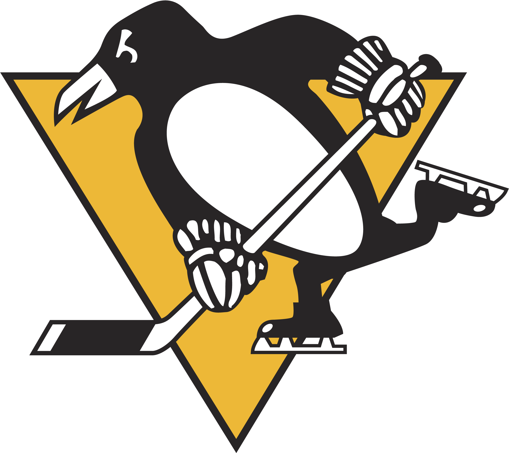

The Teams
Eastern Conference
Atlanic Division
- Team: Detroit Red Wings
- Founded: 1932
- Stadium: Little Caesers Arena
- Stanley Cups: 11
- Website: Red Wings
- Team: Florida Panthers
- Founded: 1993
- Stadium:FLA Live Arena
- Stanley Cups: 0
- Website: Panthers
- Team: Ottawa Senators
- Founded: 1992
- Stadium: Canadian Tire Arena
- Stanley Cups: 0
- Website: Senators
- Team: Tamper Bay Lightning
- Founded: 1992
- Stadium: Amalie Arena
- Stanley Cups: 3
- Website: Lightning
- Team: Toronto Maple Leafs
- Founded: 1917
- Stadium: Scotiabank Arena
- Stanley Cups: 13
- Website: Maple Leafs
Metropolitan Division
- Team: Columbus Blue Jackets
- Founded: 2000
- Stadium: Nationwide Arena
- Stanley Cups: 0
- Website: Blue Jackets
- Team: New York Rangers
- Founded: 1926
- Stadium: Madison Square Gardens
- Stanley Cups: 4
- Website: Rangers

- Team: Pittsburgh Penguins
- Founded: 1967
- Stadium: PPG Paints Arena
- Stanley Cups: 5
- Website: Penguins
- Team: Washington Capitals
- Founded: 1974
- Stadium: Capital One Arena
- Stanley Cups: 1
- Website: Capitals
Western Conference
Pacific Division
- Team: Anaheim Ducks
- Founded: 1991
- Stadium: Honda Center
- Stanley Cups: 1
- Website: Ducks
- Team: Los Angeles Kings
- Founded: 1967
- Stadium: Crypto.com Arena
- Stanley Cups: 2
- Website: Kings
- Team: Vegas Golden Knights
- Founded: 2017
- Stadium: T-Mobile Arena
- Stanley Cups: 0
- Website: Golden Knights
Central Division
- Team: Minnesota Wild
- Founded: 2000
- Stadium: Xcel Energy Center
- Stanley Cups: 0
- Website: Wild
- Team: Nashville Predators
- Founded: 1998
- Stadium: Bridgestone Arena
- Stanley Cups: 0
- Website: Predators
- Team: St. Louis Blues
- Founded: 1967
- Stadium: Enterprise Arena
- Stanley Cups: 1
- Website: Blues